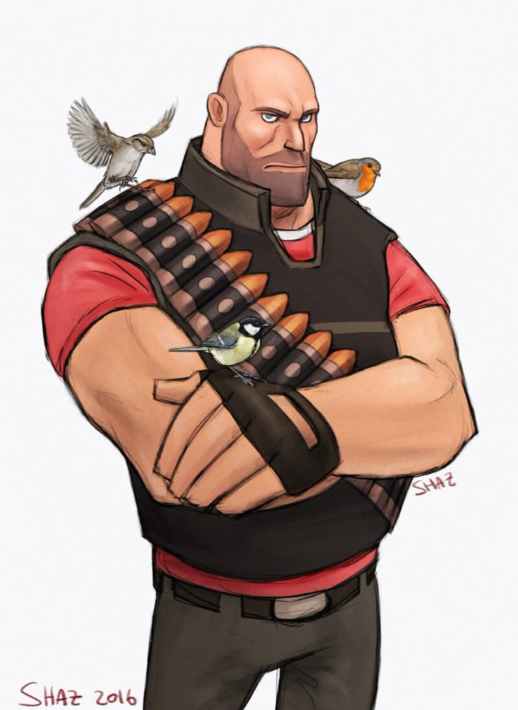

Origen: Rusia (Siberia)
Salud: 300 HP
Velocidad: 77%
El Heavy Weapons Guy (En Español: Tío de las armas pesadas) es una inmensa mole procedente de la antigua Unión Soviética. Es indiscutiblemente el «rostro» de Team Fortress 2, apareciendo como el más prominente en la portada del juego y demás material promocional, además de ser protagonista del primer vídeo Conoce al Equipo y aparecer en todos los siguientes hasta la fecha. El Heavy es la clase más pesada y posiblemente la más peligrosa de Team Fortress 2, dotado de la más alta resistencia y una Ametralladora muy pesada, la cual, por otro lado, lo hace más lento al caminar. Su potencia de disparo es altamente impresionante, penetrante pero también muy imprecisa, le permite acabar con sus enemigos en cuestión de segundos. La velocidad es su punto débil, si además le sumamos la reducción de velocidad que sufre cuando pone en marcha su Ametralladora, el Heavy va realmente a paso de tortuga, haciéndolo un blanco expuesto a, sobre todo, Spies y Snipers. Su debilidad en cuanto a velocidad le hace depender de la atención de un Medic para poder sobrevivir gran carga de ataques enemigos. Además de ser un gran tanque y tener una gran potencia de fuego, el Heavy puede ayudar a sus compañeros dándoles su Focata o, en su defecto, regenerar su salud completamente comiéndoselo él mismo para luego seguir en el fragor de la batalla.
